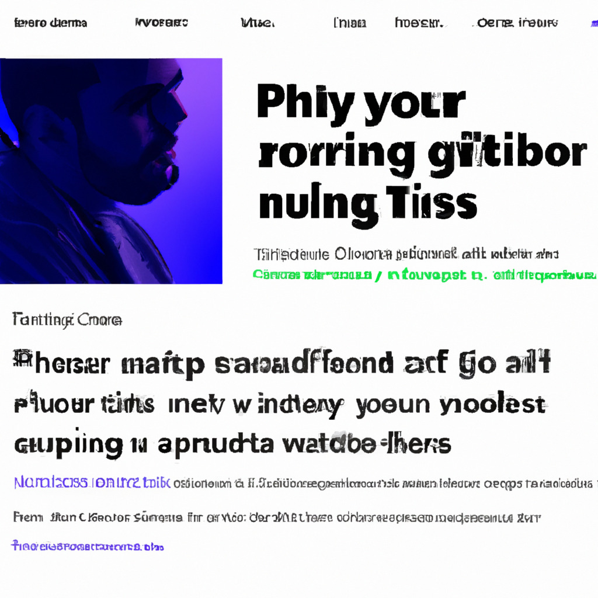

GitHub, the world's leading software development platform, has introduced a new feature that allows users to provide emotional support to project maintainers through unique 'emotional support commits'. This groundbreaking update aims to foster a more empathetic and supportive open-source community, allowing developers to not only contribute code but also boost morale.
In addition to the typical code contributions, GitHub users can now make a dedicated 'emotional support commit' by adding a specially formatted comment within the commit message. This comment includes a keyword and a short message, such as "EMOTIONAL_SUPPORT: You're doing great!" or "EMOTIONAL_SUPPORT: Keep up the good work!"
GitHub's algorithms will then recognize these keywords and flag them as emotional support contributions. These commits will be displayed in a separate tab on the repository page, creating a space for maintainers and contributors to share positive feedback, encouragement, and appreciation for one another's work.
Many open-source developers work tirelessly on projects without financial compensation or public recognition. These emotional support commits are designed to foster a positive atmosphere within the community, making it easier for developers to persevere through the challenges and frustrations of software development.
This innovative feature has been met with both enthusiasm and skepticism. While some users have praised GitHub for its commitment to supporting developers' mental wellbeing, others have expressed concerns that emotional support commits could be misused or lead to an inundation of non-code-related notifications.
However, as the feature gains traction, it is clear that many users are embracing the opportunity to provide and receive emotional support in the open-source community. With this new feature, GitHub is taking a step towards a more inclusive and supportive environment for developers worldwide.